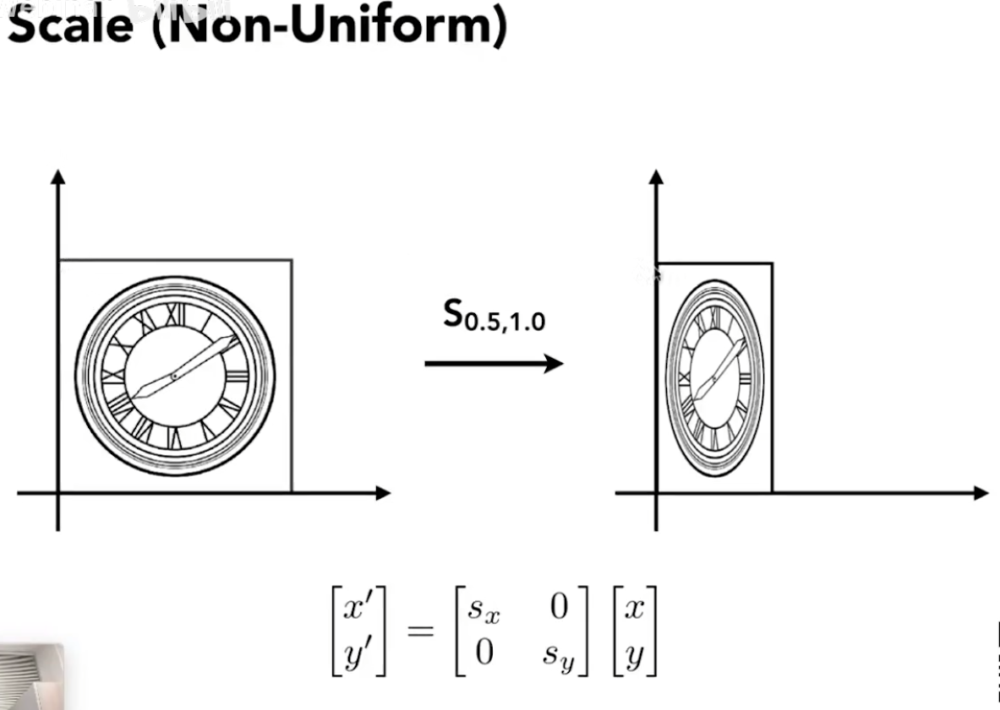
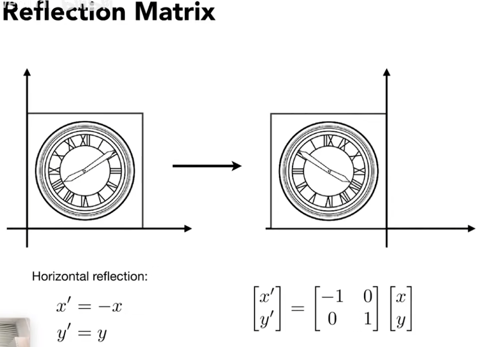
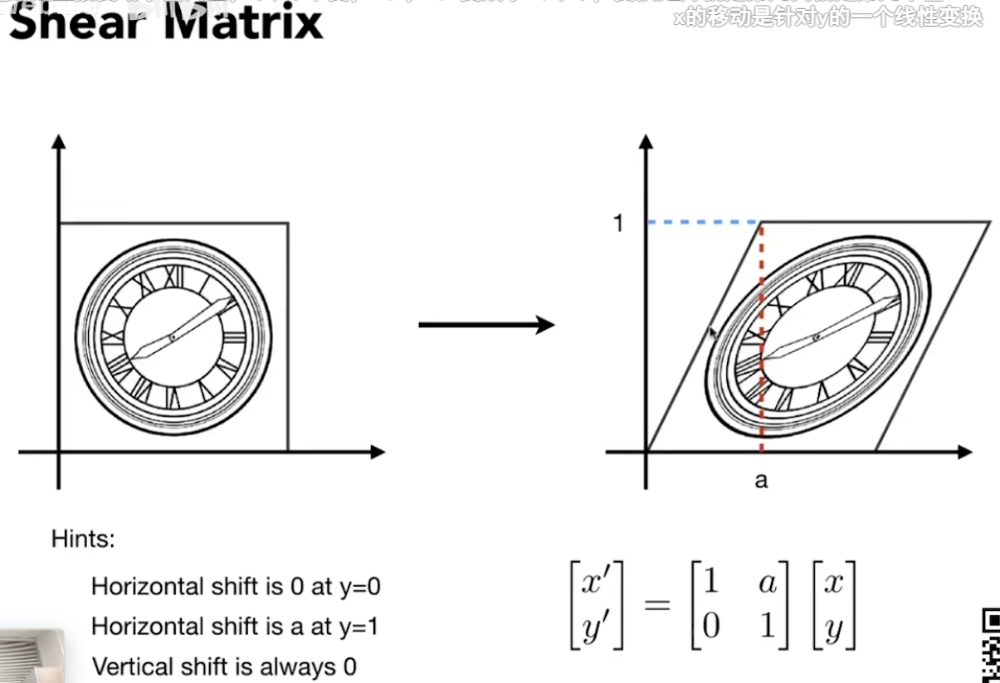
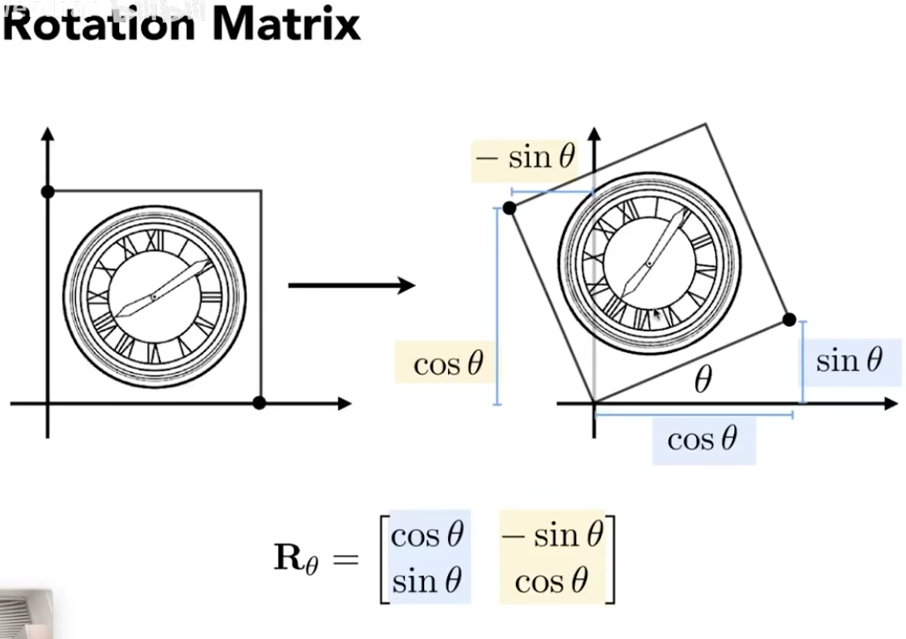
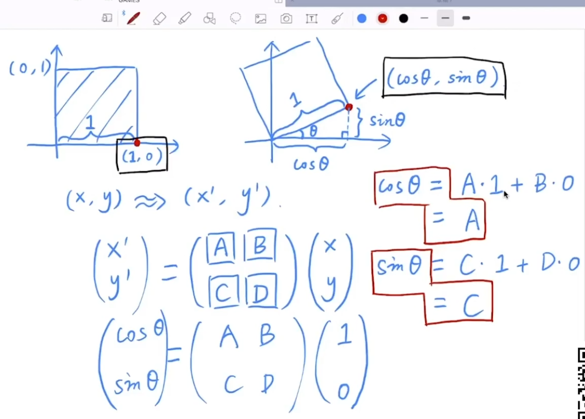
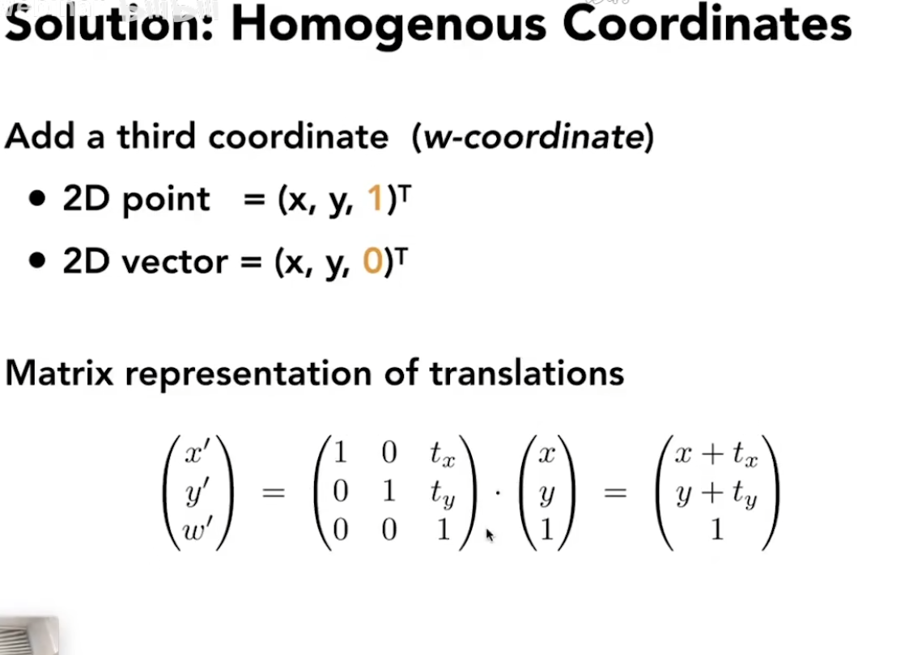
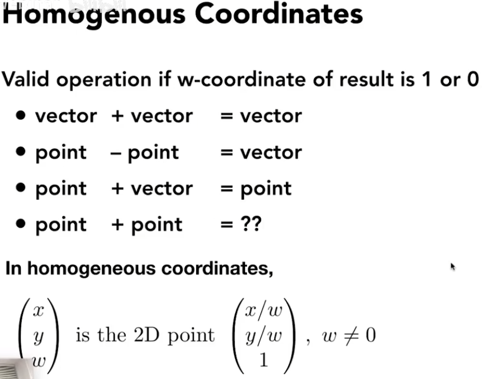
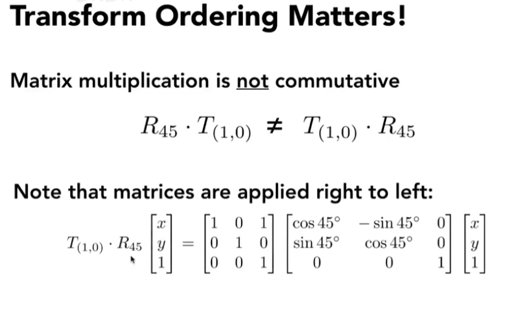

摘要：
线性变换；齐次坐标变换；矩阵。
（线性）变换
称三维到二维的变换（/发生降维的变换）为投影。
缩放变换：

反射变换：例子中为关于y轴进行镜像操作。

切变：例子中竖直方向不做移动，水平方向上每个点移动ay距离。

旋转方向默认逆时针旋转。
旋转矩阵的公式推导见下图


线性变换：坐标点（/向量）能通过左乘矩阵来变换到另一个坐标。要求矩阵的维度与向量相同。
齐次变换
齐次变换目的：找到一种统一的方法来表示各种变换。常规的平移变换不满足线性变换定义。
齐次过程：在原有的向量上增加一个维度，多加入的一个维度用于存放矩阵的平移变换。

注意到，向量在进行齐次变换时，增加一个维度的值为0而非1，这用于反映向量的平移不变性，保护向量的值在经过平移变换后不发生改变。若齐次变换的对象为点坐标，则增加维度的值为1。
这种设置下，也保证了齐次坐标中的“向量+向量”、“点-点”、“点+向量”操作是自恰的。其中“点+点”表示两点之间的中点，可以缩放增加的维度为1来将点坐标合理化。

仿射变换 = 线性变换（缩放、轴对称、切变、旋转） + 平移变换。这些变换均能写为齐次变换。
仿射：在这种变换下，原始对象的某些几何性质（如平行性、共线性）会被保留。
图例的变换过程是先旋转45°，再水平平移一个单位，以变换的顺序强调矩阵乘法不满足交换律。由此得到的矩阵仍为3*3，即多次齐次变换可以合并成一次复杂的、不变维的变换（重要性质，涉及矩阵压缩？）。
